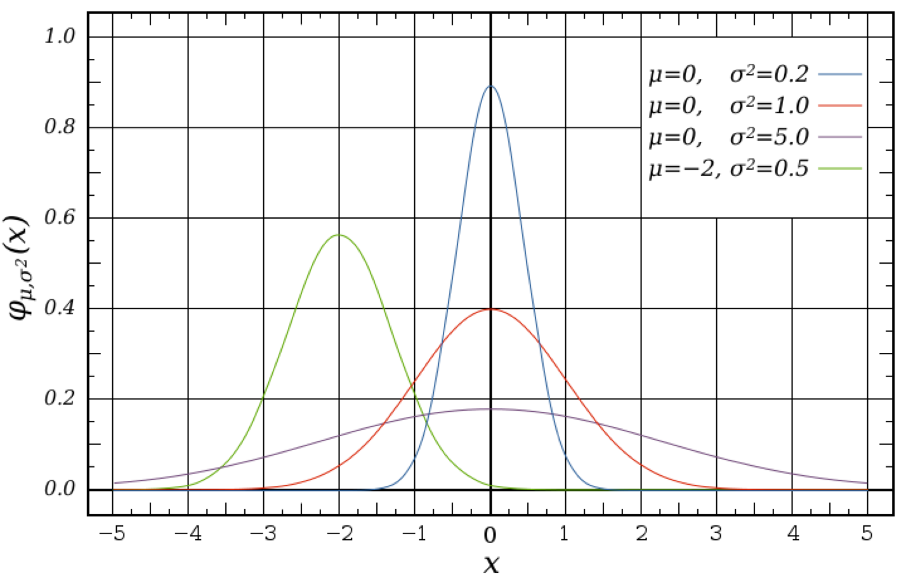

Experimental Philosophy


Welcome to the experimental philosophy page. Experimental philosophy, called x-phi for short, is a new philosophical movement that supplements the traditional tools of analytic philosophy with the scientific methods of cognitive science. So experimental philosophers actually go out and run systematic experiments aimed at understanding how people ordinarily think about the issues at the foundation of the philosophical discussion.
You can access almost all of the experimental philosophy papers published thus far by using the links on the left. Or you can check out the cutting edge section to see the newest research in experimental philosophy. Don't hesitate to contact Jonathan Phillips if you have any suggestions.
Or, if you are you looking for a brief overview of experimental philosophy, you could try reading the New York Times Article. And if you want to see what is currently going on, feel free to visit the Experimental Philosophy blog.
The site also has other x-phi related information, e.g., which journals have been publishing x-phi papers, a list of experimental philosophy labs and organizations, and so on. Or, if you want to watch x-phi take over the world, you can keep up with what is going on through social media and check out all of x-phi's press coverage.
Find us on: